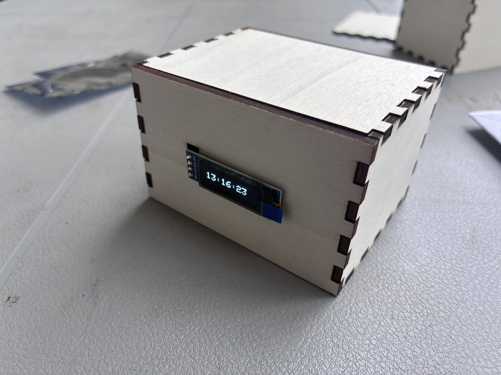
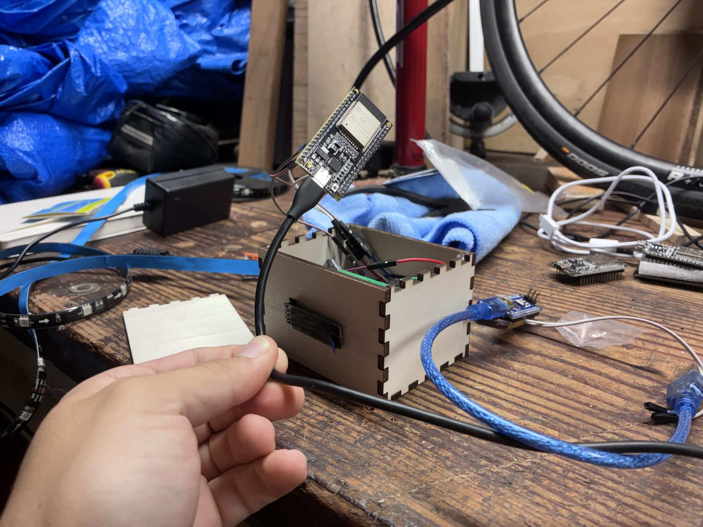
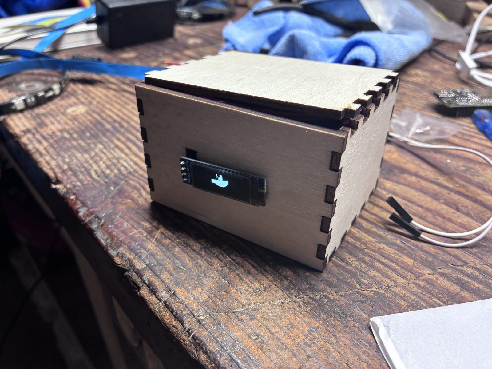
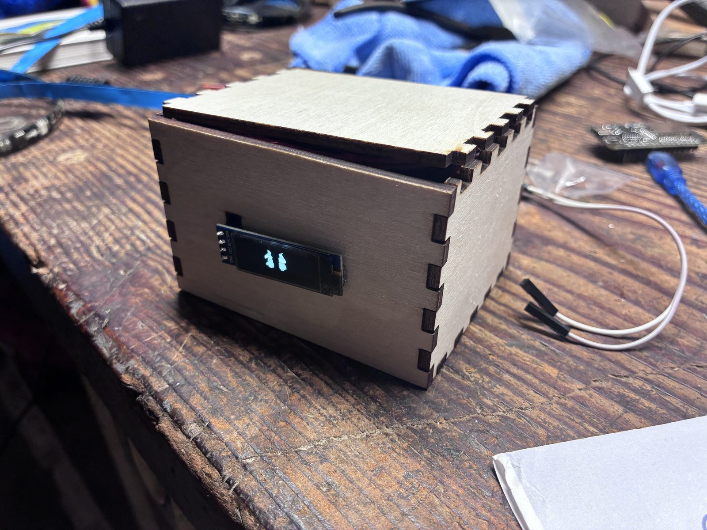

Overview
This project is a fun embedded challenge: take a well-known high-contrast video (“Bad Apple!!”) and get it to play on a 128×32 OLED display driven by an ESP32.
The whole thing is really a data problem wearing a video costume. All 6,527 frames have to live in flash memory on the microcontroller itself — there's no SD card, no streaming, no network. Getting 3.19 MiB of raw framebuffers down to something that fits, and then unpacking it fast enough to look like motion, is the actual project.
Tech
- Microcontroller: ESP32 (4 MB flash) — upgraded from an Arduino Nano
- Display: SSD1306 OLED, 128×32, driven over I²C at 400 kHz
- Toolchain: ffmpeg for frame extraction, Python + Pillow for encoding, C++ for playback
- Focus: run-length compression and fitting a video into flash
By the numbers
- Frames: 6,527
- Raw framebuffers: 3,341,824 bytes (~3.19 MiB) — 512 bytes per frame
- After RLE: 771,686 bytes (~754 KiB)
- Compression: 4.33×, about a 77% reduction
- Arduino Nano flash: 32 KB — roughly 100× too small, even compressed
Write-up
This has been on my mind for a while, since seeing all those crazy videos of people putting Bad Apple on whatever you can think of — especially that one where someone uses Desmos. I have no idea how that's possible. I'm really glad I got to do this project.
The first step was getting the OLED display and all the parts. Luckily for me, UH Mānoa did an event called Bytes & Bites, where we got food and free parts to build an OLED time display: the OLED screen I would end up using for Bad Apple, a mini Arduino, and some other non-essential components like a breadboard and cables.

Getting the video into frames
With the hardware sorted, the next thing was getting the Bad Apple video itself — finding it on YouTube, downloading it, then turning it into individual frames. I did this using ffmpeg, which was the easy part — it scales every frame down to the OLED's 128×32 resolution and dumps them out as PNGs.
I don't remember the exact invocation anymore, but it was something along these lines — set a frame rate, scale down to the panel size, and force everything to pure black and white on the way out:
ffmpeg -i bad_apple.mp4 \
-vf "fps=30,scale=128:32,format=gray" \
-pix_fmt monob \
frames/%05d.pngThe hard step was turning those frames into code the OLED could actually display. That was done with a Python program.
Every frame is 128×32, which is 4,096 pixels. Pillow's convert('1') collapses each one down to a single bit — pure black or pure white, no grays in between — and getdata() hands back a flat list of all 4,096 values in reading order.
def compress_frame_rle(image_path):
img = Image.open(image_path).convert('1') # Convert to 1-bit
pixels = list(img.getdata()) # Get flat list of 4096 pixels (128x32)The memory problem
The result of this was bad_apple_rle.h, a 4.46 MB file — though most of that bulk is just text formatting, since every byte is written out as 0x1f, in the source. The actual data is closer to 754 KiB. But there's a problem I noticed pretty quickly: the Arduino Nano only has 32 KB of flash memory. The video wasn't close to fitting — it wasn't even in the same order of magnitude. So I needed to upgrade to an ESP32, which has 4 MB.

And even with the upgrade, I still needed a compression algorithm. Each 128×32 frame is 4,096 pixels, which packs into 512 bytes. Times 6,527 frames, that's 3.19 MiB of raw framebuffers — technically under 4 MB, but with nothing left over for the program itself, and no margin at all. Compression wasn't optional.
The trick is that Bad Apple is almost entirely large flat shapes. A row of 128 identical pixels doesn't need 128 entries — it needs one entry that says “white, 128 times.” That's run-length encoding, and it's a near-perfect match for this video.
Each run gets packed into a single byte: the top bit stores the color, and the bottom seven store how many pixels long the run is. Seven bits caps a run at 127, which is why the loop cuts a run off once it hits that ceiling.
for pixel in pixels:
# If color matches and count < 127, keep counting
if pixel == current_color and count < 127:
count += 1
else:
# Pack color into the highest bit (bit 7), count into bits 0-6
color_bit = 0x80 if current_color > 0 else 0x00
rle_data.append(color_bit | count)
current_color = pixel
count = 1Averaged across all 6,527 frames that works out to about 118 bytes per frame, down from 512 — a 4.33× reduction, and the difference between “this fits comfortably” and “this doesn't fit at all.”
The other half of the file is a lookup table. Since every frame compresses to a different length, the ESP32 has no way to know where frame 4,000 begins unless you write it down, so the encoder tracks a running byte offset as it goes:
# Record where this frame starts so the ESP32 can find it
frame_offsets.append(total_bytes)
total_bytes += len(frame_data)Playing it back
On the ESP32 side, decoding is just the encoder run backwards. Look up where the frame starts and where the next one starts — the difference is how many bytes to read — then walk through them, unpacking each byte back into a color and a run length.
uint8_t packet = pgm_read_byte(&(bad_apple_rle[offset + i]));
uint8_t color = (packet & 0x80) ? SSD1306_WHITE : SSD1306_BLACK;
uint8_t count = (packet & 0x7F);
for (uint8_t j = 0; j < count; j++) {
int x = pixelIndex % 128;
int y = pixelIndex / 128;
display.drawPixel(x, y, color);
pixelIndex++;
}
0x80 masks off the color bit and 0x7F masks off the count. And since the pixels were stored in reading order, turning a flat index back into screen coordinates is just divide and remainder: % 128 gives the column, / 128 gives the row.
The result
The final result of this, after a lot of tweaking and fixing, was a functional Bad Apple OLED display!!


The nice part is that from the outside it's the exact same box from the workshop. Same plywood, same little screen — it just isn't telling the time anymore.
Once again this was a fun little project that had most of the stuff already done for me, and developing it a bit further into something I wanted to do for a long time was a lot of fun. I hope you like it as much as I do.